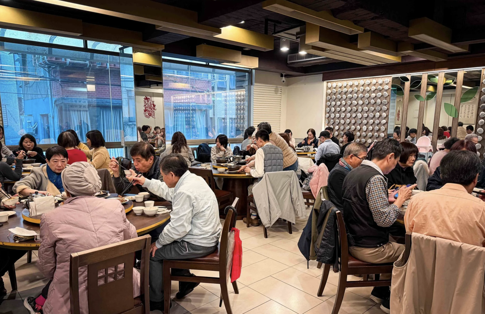

家園江浙小館｜古亭巷弄江浙菜：醃篤鮮、獅子頭與多人聚餐參考

一句話摘要
想找古亭附近適合多人共享、菜色偏細緻下飯的江浙菜，可把家園江浙小館列入清單；食記作者特別推薦醃篤鮮與紅燒獅子頭，建議先訂位，並以店家當日的營業、座位與菜單資訊為準。
原始貼文與食記重點
Facebook 公開貼文寫道，這是一間「藏在台北市中心巷弄的江浙菜好店」，稱一桌人均約 400 元、中午容易客滿；留言附上 Nash 的完整食記。可公開擷取的貼文沒有餐廳官方連結，因此下列餐點描述與價格均以食記作者 2026 年 9 月 19 日的記錄為主，不應視為店家保證。
食記將家園江浙小館描述為位於古亭周邊的巷弄餐廳，店內有兩層用餐區，適合家庭聚餐或朋友小聚。作者表示菜單有小份與中份可選，涵蓋肉類、海鮮、豆腐／蛋、蔬菜、砂鍋／湯品與飲品；未訂位可能難有座位。
食記作者推薦菜色
- 醃篤鮮：食記記錄為 580 元；作者形容湯頭鮮而不膩，帶豚骨香氣。
- 紅燒獅子頭：食記記錄為 350 元；搭配白菜與筍片，是作者稱為「必點」的菜色。
- 豆乾肉絲：食記記錄為 260 元；作者著重其細緻刀工與鑊氣。
- 茭白筍牛肉：食記記錄為 300 元；作者推薦其筍香與脆度。
- 韭黃鱔糊：食記記錄為 430 元；作者稱鱔魚鮮嫩、醬汁醇厚。
- 乾扁四季豆：食記記錄為 270 元；適合作為配飯蔬菜。
食記列出的店家資訊
- 店名：家園江浙小館
- 地址：台北市大安區羅斯福路二段 15 巷 2 號
- 電話：02 2396 5833
- 食記列示營業時間：11:30–14:00、17:30–21:00
出發前提醒
- 食記作者稱約 5 人用餐的人均為 400 多元；實際金額會依菜色、份量、飲品與服務規則改變。
- 貼文提及「中午絕對客滿」是作者的社群說法，不是即時座位資料；假日或用餐尖峰建議先電話訂位。
- 價格、營業時間、公休、刷卡／服務費與菜單供應可能調整，請直接向店家確認。
- 餐點評價屬作者個人體驗；若有過敏、素食或其他飲食需求，點餐前先詢問店家。